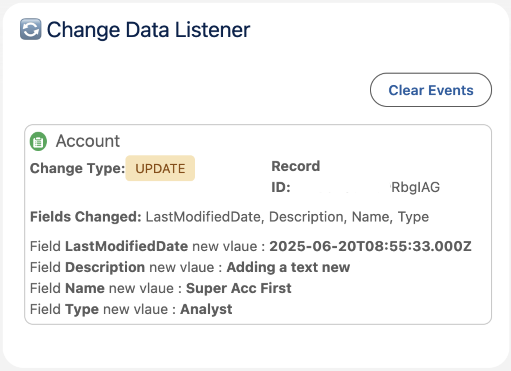

⚡ Salesforce CDC Listener - LWC
This project is a Lightning Web Component designed to listen to real-time Change Data Capture (CDC) events in a Salesforce org.
📦 Features
- Subscribes to CDC events for Account, Contact, and Case
- Configurable to display real-time changes inside a Lightning Page
- Simplifies CDC testing and verification
🚀 Setup
- Add Account, Contact, and Case to CDC under Setup → Change Data Capture
- Ensure the user has:
- Read access to those objects
API Enabled permission (via Permission Set or Profile)
- Add the component to a Home Page or object-specific Record Page
🖼️ Component Preview
This is how the component looks when placed on a page:

🔗 Repository
View full source code and instructions on GitHub.
🔐 License
This project is licensed under the BSD 3-Clause License.
© 2025 Sudhir Kumar Panda